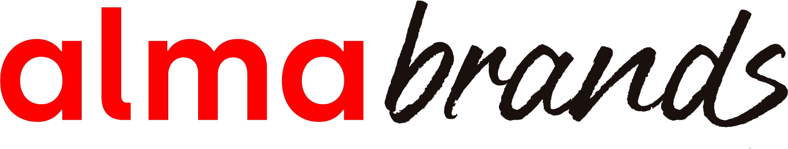

OCTUBRE 2026
Versión Ejecutiva
Profundización Público Zona Sur Hush Puppies
Con
teni
dos
- Objetivos y Metodología
- Relación con la categoría y perfiles identificados
- Salud e imagen de marcas
- Conclusiones y Desafíos para Hush Puppies
1.
Objetivos y
Metodología
Estudio Cualitativo
Objetivo general
- Profundizar en el consumidor objetivo definido para Hush Puppies, tomando la información obtenida a partir de la investigación global y complementando y adaptando los principales insights y hallazgos a la realidad local del Sur de Chile.
- Circle of Friends (4 personas), 2 horas
Target:
- Hombres y mujeres, pertenecientes al NSE C1, entre 35 y 55 años, residentes de las ciudades de Temuco, Concepción, Valdivia y Puerto Montt.
- Conocedores de Hush Puppies y su competencia (mix entre usuarios y no usuarios de la marca)
- Que hayan comprado calzado en los últimos 3 meses
Se realizaron 16 Circle of Friends, distribuidas de la siguiente manera:
| Ciudades | CoF | |
|---|---|---|
| Hombres | Mujeres | |
| Temuco | 2 | 2 |
| Concepción | 2 | 2 |
| Valdivia | 2 | 2 |
| Pto. Montt | 2 | 2 |
| TOTAL: | 16 | |
Evolución de Atributos: Cambio de Significado en la Categoría
De Durabilidad Pasiva a Desempeño Activo
Antes: 'Un zapato que dura mil años en el clóset' (cuero rígido).
Hoy: Capacidad de responder al uso diario, tecnología de confección, resistencia al clima (lluvia/frío) y respaldo de marca.
De Soporte Prolongado a Experiencia Liviana Integral
Antes: Resistencia al cansancio y soporte de estructura rígida.
Hoy: Liviandad, flexibilidad, buen calce/horma, suavidad en la plantilla y facilidad de uso sin roces desde el primer día.
De Adorno Secundario a Expresión de Identidad
Antes: Un atributo complementario estético subordinado.
Hoy: Herramienta de diferenciación personal, silueta moderna, combinación de colores y versatilidad para distintas tenidas.
De Evaluación Caro/Barato a Ecuación de Valor
Antes: Decisión binaria basada en el costo monetario.
Hoy: Evaluación del valor entregado vs. costo, justificado por versatilidad, frecuencia de uso y respuesta técnica.
Vivir en el Sur: Calidad de Vida, Clima y el Clóset Dinámico
Naturaleza Cotidiana
No es destino vacacional, es entorno diario. Exige ropa y calzado con tracción y protección.
El Manejo del Tiempo
Ritmo más humano y menos traslados. Permite transitar entre trabajo, hogar y naturaleza en un mismo día.
Relaciones de Cercanía
Escala urbana que promueve encuentros sociales frecuentes y no planificados.
Convivencia con el Clima
La lluvia y el frío no paralizan la vida; se aprenden a gestionar con un vestir adaptativo.
Vestir por Capas (Layering)
Norma obligatoria para enfrentar oscilaciones térmicas durante el día.
Versatilidad Multientorno
El calzado debe funcionar igual de bien en la oficina, la calle húmeda o una caminata.
Protección Térmica e Impermeabilidad
Exigencia técnica base sin renunciar al atractivo estético.
Transición de Ocasiones
Se diluyen las fronteras rígidas entre lo formal, lo casual y lo outdoor.
Matices Territoriales: El Sistema de Clóset según Cada Ciudad del Sur
Enfoque Altamente Funcional y Outdoor
- Alta intensidad de lluvia y viento exigente.
- Protagonismo absoluto de calzado outdoor/trekking, botines e impermeabilidad.
- Vestuario orientado a la protección familiar y la naturaleza activa.
Equilibrio entre Funcionalidad y Cultura
- Convivencia naturalizada con la lluvia constante.
- Búsqueda de equilibrio entre protección técnica y expresión estética/cultural.
- Gran valoración del diseño de autor, materiales nobles y comodidad.
Lógica Práctica, Eficiente y Adaptativa
- Clima con invierno marcado que genera tensión estacional.
- Vestuario guiado por la versatilidad para resolver la rutina sin complicaciones.
- Foco en la relación precio-calidad y zapatillas outdoor/urbanas.
Protagonismo Urbano, Zapatillas y Tendencia
- Escenario más metropolitano y dinámico.
- El calzado cumple un rol destacado de visibilidad de imagen personal y moda.
- Zapatillas urbanas lideran con fuerza como elemento central del look.
Composición Cuantitativa del Clóset: Zapatillas Lideran el Uso y la Compra
#1 Zapatillas Urbanas
63% menciones
Opción más relevante en el clóset de manera transversal en hombres y mujeres.
#2 Zapatillas Deportivas
56% menciones
Predominio significativo en hombres (62%) y en Santiago (65%).
#3 Botines y Outdoor
43% / 34% menciones
Relevancia crítica en mujeres (botines 60%) y ciudades del Sur (Pto. Montt 61%).
Detalle de Menciones y Compras por Segmento (Base Total: 621 casos)
- Menciones de Importancia en Clóset (1er lugar): Zapatillas urbanas y deportivas suman más del 50% de las menciones principales.
- Diferencias por Género:
- Hombres: Zapatillas deportivas (28% 1° lugar) y Outdoor/Trekking (15% 1° lugar) superan al promedio.
- Mujeres: Botines/Bototos (23% 1° lugar) y Botas (9% 1° lugar) se posicionan fuertemente.
- Diferencias por ciudades:
- Pto. Montt / Pto. Varas: Botines (61% total menciones) encabeza la prioridad.
- Temuco: Calzado outdoor/trekking destaca significativamente respecto al resto del país.
Drivers de Elección: Comodidad Inamovible con Exigencias Regionales
Ranking General de Atributos (Total Menciones)
Diferencias por Género y Zona Geográfica
Asignan significativamente mayor valor a la liviandad/flexibilidad (27% vs 18% hombres) y a que combine con distintas tenidas (18% vs 9% hombres).
Priorizan la comodidad prolongada, durabilidad técnica y la versatilidad de uso sin complicaciones.
En Temuco y Puerto Montt destaca la adecuación al clima (31% y 34%). En Valdivia la impermeabilidad/resistencia al agua (24%) surge como driver crítico superior a Santiago.
A partir de los hallazgos del estudio cualitativo, se identificaron dos variables que estructuran de manera consistente las diferencias entre los clientes entrevistados:
- Nivel de involucramiento con la categoría
- Rol del diseño en la decisión de compra
El cruce de ambas dimensiones permite construir un mapa de cuatro perfiles de clientes.
Involucramiento medio. Le importa tomar una buena decisión, pero privilegia la seguridad por sobre la exploración. Busca calidad, confianza y diseños atemporales respaldados por marcas conocidas.
Involucramiento alto. Disfruta descubrir alternativas que reflejen su estilo personal. Busca diseño, originalidad y diferenciación, manteniendo un equilibrio con la funcionalidad.
Bajo involucramiento con la categoría. Ve el calzado principalmente como una herramienta para resolver necesidades cotidianas. Busca comodidad, practicidad y buen precio, dedicando poco tiempo a la búsqueda o exploración.
Alto involucramiento con la categoría. Disfruta el mundo del calzado, conoce marcas, modelos y materiales, y encuentra placer en el proceso de búsqueda y compra. El zapato trasciende la necesidad funcional y se transforma en un interés personal.
Caracterización de los 4 Perfiles Cualitativos del Consumidor
Perfil Funcional
- Closet acotado (5-8 pares).
- Compra por necesidad o reemplazo.
- Evalúa resistencia, comodidad y precio-valor.
- Ve el proceso de compra como un trámite.
“Necesito el zapato correcto, no más zapatos”
Perfil Clásico
- Closet mediano (10-20 pares).
- Busca sobriedad, buen calce y elegancia.
- Valora el cuero, marcas con trayectoria y durabilidad.
- Acepta pequeños sacrificios estéticos.
“Un buen zapato trasciende las tendencias”
Perfil Explorador
- Closet amplio (15-30 pares).
- Guiado por el descubrimiento y marcas de autor.
- Valora originalidad, detalles y fabricación noble.
- Dispuesto a pagar más por diferenciación.
“Busco piezas que tengan algo que me defina”
Perfil Entusiasta
- Closet extendido (30-80+ pares).
- Investiga cueros, tecnologías y colaboraciones.
- Máximo nivel de exigencia en todas las variables.
- Perfil más afín a propuestas de valor completas.
“El calzado es mi afición y pasión personal”
Del cualitativo al cuantitativo: no cambian los tipos de consumidores, cambia la precisión con que los entendemos
El cualitativo reveló distintas lógicas de relación con el calzado; el cuantitativo muestra cómo se organizan realmente en el mercado
- Resolver
- Acompañar
- Expresar
- Confiar
- Qué atributos priorizan
- Cuántos atributos combinan
- Qué tan involucrados están
- Qué relación tienen con Hush Puppies
Los perfiles desde el estudio cualitativo se construyeron explícitamente desde trade-offs: qué criterio domina cuando hay que elegir.
Los perfiles desde el estudio cuantitativo permiten que una misma persona valore simultáneamente comodidad, estilo, calidad, confianza y precio-valor.
Los cuatro perfiles identificados y su representatividad
En base a las variables claves de segmentación se pudieron identificar cuatro perfiles:
Desconectado
6%
Ecléctico
Moderado
36%
Entusiasta
Integral
28%
Funcional-
Racional
30%
Ninguna variable demográfica (sexo, edad, NSE, macrozona) muestra diferencias estadísticamente significativas entre segmentos (p>0,05 en las 4 pruebas).
Los cuatro perfiles son transversales: se explican por actitud frente al calzado, no por características sociodemográficas.
| Hombre | Mujer | 36-45 años | 46-55 años | Santiago | Regiones | |
|---|---|---|---|---|---|---|
| Ecléctico Moderado | 35% | 37% | 38% | 35% | 41% | 35% |
| Funcional- Racional | 30% | 30% | 30% | 29% | 26% | 32% |
| Entusiasta Integral | 29% | 27% | 25% | 32% | 28% | 28% |
| Desconectado | 6% | 5% | 7% | 5% | 6% | 6% |
| Bases: | 291 | 330 | 361 | 260 | 195 | 426 |
Los cuatro perfiles identificados y su ADN
(Precio-Valor)3,9
ADN: Perfil más transversal; valora todo de manera equilibrada, pero su mayor puntuación es la lealtad y confianza hacia algunas marcas que calcen adecuadamente con su estilo.
(Precio-Valor)4,3
ADN: busca calidad y funcionalidad combinada con una buena relación precio-valor; es más lejano a la moda o al diseño de tendencia (único segmento bajo el promedio en el eje Estética)
(Precio-Valor)4,6
ADN: Es el más exigente ya que presenta las puntuaciones más altas en las 5 dimensiones a la vez — comodidad, estilo, lealtad, calidad y precio-valor.
(Precio-Valor)3,1
ADN: Es el menos exigente de los 4 perfiles, lo más relevante es su sensibilidad al precio.
: Puntuación más alta
¿Cómo se relaciona cada uno de estos perfiles con la categoría?
Los cuatro perfiles se diferencian por cuánto y qué le exigen al calzado.
36%
“Quiero que calce conmigo”
- Busca un buen equilibrio de drivers
- Sostiene lealtad a marcas que calcen bien con su estilo
Lo distingue: balance y estilo
Tensión con Hush Puppies:
“No encuentro algo que sea realmente para mí”
30%
“Quiero que valga lo que cuesta”
- Comodidad + calidad + desempeño + precio-valor.
- No necesita que el calzado sea moda.
Lo distingue: eficiencia.
Tensión con Hush Puppies:
“Sé que es buena, pero necesito justificar el precio”
28%
“Me importa todo”
- No hace trade-off fácilmente.
- Quiere: comodidad + estilo + calidad + confianza + buen valor.
Lo distingue: exigencia / alto involucramiento en la categoría
Mejor relación con Hush Puppies:
- Presenta las mejores tasas de alta consideración, habitualidad, preferencia e intención de compra futura
6%
“Me mueven las ofertas y promociones”
- Lo más relevante es la buena ecuación precio-valor
- Es menos exigente que los demás perfiles en las distintas dimensiones
Lo distingue: sensibilidad a precio.
Tensión con Hush Puppies:
“Es cara” “no está en mi radar”
Menor conocimiento de marca e intención de compra.
El Entusiasta Integral es el perfil de mayor afinidad actual con Hush Puppies.
Imagen de Marca: Asociación de Atributos a Hush Puppies
Hombres
Mujeres
Bases:
291
330
En ambos géneros, una de las mayores fortalezas de la marca es la durabilidad, buena calidad y versatilidad de su calzado. Entre las mujeres, destaca además fuertemente la confiabilidad de la marca.
Dentro de los atributos menos desarrollados para ambos sexos, está su asociación a ofertas/descuentos y actual/moderno. Y en el caso de las mujeres, además presenta una baja asociación con buena relación precio-calidad.
Imagen de Marca Hush Puppies: Fortalezas Históricas y Puntos Ciegos
Fortalezas de imagen (Atributos Ganados)
✔ Durabilidad y Buena Calidad
Pilar número uno en asociación espontánea tanto en hombres como en mujeres.
✔ Marca Confiable
Asociación muy fuerte en mujeres y en regiones. Genera respaldo y tranquilidad.
✔ Versatilidad de Uso
Entre los hombres, Hush Puppies es la marca N°1 en 'sirve para distintas tenidas y ocasiones'.
✔ Adecuación al Clima del Sur
Reconocida por líneas de invierno, cuero y botines resistentes.
Debilidades de imagen (Desafíos Clave)
✖ Actualidad y Modernidad
Su punto más débil en ambos géneros. Percibida como clásica pero poco conectada con tendencias.
✖ Relación Precio-Calidad (Mujeres)
Presenta una baja asociación con 'precio-calidad' entre las mujeres frente a marcas deportivas.
✖ Ofertas y Descuentos
Escasa percepción de promociones atractivas respecto al retail y competidores.
✖ Diseño / Estilo de Moda
Percibida como una opción correcta pero con escasa capacidad de generar sorpresa o deseo en vitrina.
Posicionamiento vs. Competencia: La Apropiación de la Comodidad
Marcas Deportivas
(Skechers, Nike, Adidas)
Apropiación de la Comodidad Moderna
- Llevaron la comodidad hacia la ligereza, flexibilidad y tecnología activa.
- Combinan confort con diseño actual y percepción de valor accesible.
- Skechers lidera en mujeres por confort indulgente y caminata.
Hush Puppies
(Territorio Actual)
Credenciales de Calidad Tradicional
- Dominio en versatilidad, cuero, durabilidad y confianza.
- Fuerte presencia en calzado casual, formal y botines de invierno.
- Riesgo: Percibida como 'clásica estática' si no actualiza códigos.
Marcas Outdoor / Formales
(CAT, Lippi, Guante)
Funcionalidad Técnica y Formalidad
- Atributos técnicos: impermeabilidad y resistencia climática extrema.
- Guante compite en el territorio formal masculino en comodidad y cuero.
- Oportunidad HP: Ocupar el espacio híbrido entre lo casual y la protección.
El problema no es que Hush Puppies haya dejado de ser valorada
La marca conserva credenciales; perdió centralidad en la elección.
Diferencias por perfiles y zonas
Freno en Ecléctico Moderado:
El obstáculo no es el precio, sino la falta de sintonía estética («no encuentro mi estilo»). Solución: exhibición de variedad y colecciones modernas.
Freno en Funcional-Racional:
Resistencia por precio no justificado. Solución: evidenciar durabilidad, materiales nobles (cuero) y costo por uso.
Freno en el Sur (Puerto Montt/Varas):
41% declara que «no está en su radar». Solución: visibilidad en tiendas físicas locales y vitrinas dinámicas.
El Sur es una oportunidad, pero no porque exista “otro consumidor”
El contexto cambia lo que el calzado debe resolver; los perfiles actitudinales son transversales.
MAYOR CAPITAL DE MARCA
En regiones Hush Puppies tiene mayor recuerdo y preferencia declarada. Sin embargo, esa ventaja no se convierte automáticamente en compra habitual.
MAYOR EXIGENCIA FUNCIONAL
Clima, impermeabilidad, resistencia, botines e invierno adquieren mayor relevancia y son una oportunidad natural para la marca.
MISMO DESAFÍO DE VIGENCIA
Además de funcionalidad, la propuesta debe demostrar versatilidad, estilo, actualidad y una ecuación de valor convincente.
4.
Conclusiones y Desafíos
para Hush Puppies
Cinco desafíos clave para volver a convertir capital de marca en relevancia
- 01 Redefinir la comodidad Construir una comodidad propia que integre bienestar, liviandad, desempeño y tecnología, sin perder el ADN de calidad.
- 02 Hacer visible la vigencia Mostrar con más fuerza diseño, estilo y modernidad, especialmente donde hoy la marca se percibe clásica o fuera del radar.
- 03 Reconstruir valor percibido No solo bajar precio: justificarlo mejor a través de durabilidad, materiales, desempeño y beneficios relevantes.
- 04 Activar la confianza Transformar un atributo ganado en una razón concreta de elección, recomendación y preferencia.
- 05 Ganar el sur desde su contexto Capitalizar clima, impermeabilidad, funcionalidad y versatilidad, con una propuesta que también se sienta actual.
Hush Puppies no perdió su valor.
Perdió parte de su relevancia.
La oportunidad está en volver contemporáneos los atributos que históricamente hicieron fuerte a la marca.
Actualizar sin perder confianza · Modernizar sin perseguir tendencias · Recuperar relevancia sin renunciar a su historia.